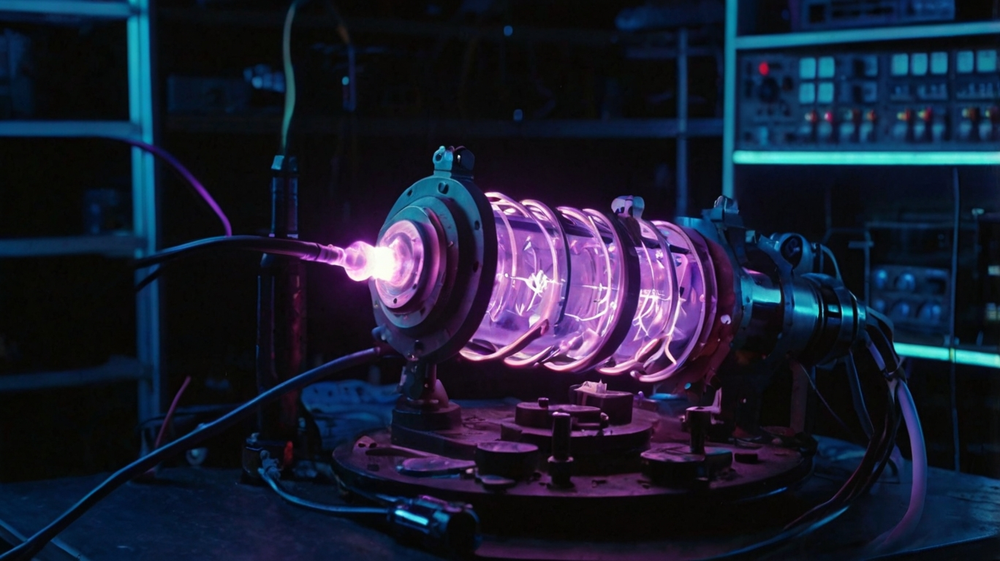

El plasma es el cuarto estado de la materia, y con este experimento puedes generar un rayo de plasma dentro de un tubo con gas ionizable. Esta versión del “cañón de plasma” es más avanzada, pero muy impresionante.
Materiales:
- 1 transformador de alto voltaje (como los de encendido de neón o microondas – uso con extrema precaución)
- 1 tubo de vidrio cerrado, con gas como neón, argón o incluso aire a baja presión
- Electrodos metálicos (uno en cada extremo del tubo)
- Cables aislados y pinzas cocodrilo
- Fuente de alimentación estable y segura
- Soporte o estructura para fijar el tubo
- Interruptor o botón de disparo
- Equipo de seguridad (guantes, gafas protectoras)
